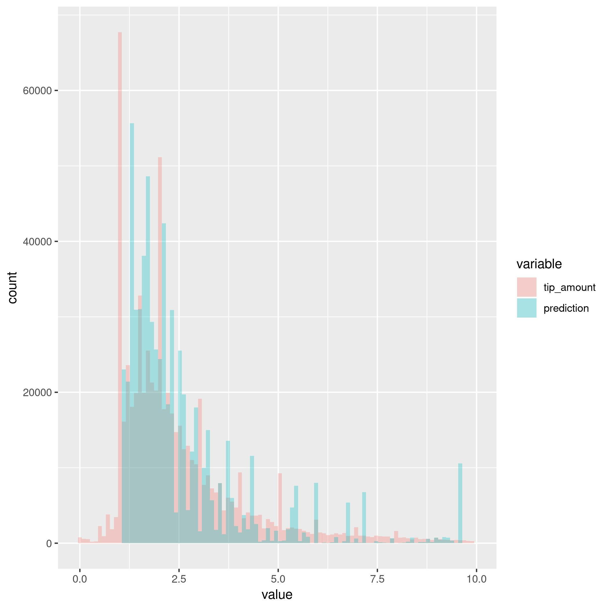
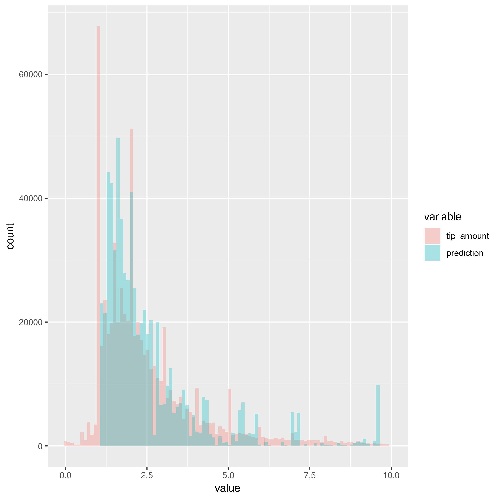

Table of Contents
1 Download data
library("tidyverse") library("RCurl") library("readr") baseUrl <- "https://s3.amazonaws.com/nyc-tlc/trip+data/yellow_tripdata_" requiredMonths <- c("2017-03", "2017-06", "2017-12") fullUrls <- map(requiredMonths, function(x) paste(baseUrl, x, ".csv", sep="")) data <- fullUrls %>% map( function(x) x %>% read_csv %>% mutate( rideTime = as.numeric( tpep_dropoff_datetime - tpep_pickup_datetime) / 120) %>% filter(rideTime > 0) %>% filter(rideTime < 24) %>% filter(fare_amount >= 2.5) %>% filter(tip_amount > 0) %>% filter(tip_amount < 100) %>% filter(extra > 0)) data %>% reduce(function(x, y) rbind(x, y)) %>% saveRDS("taxiData.rds") # data %>% saveRDS("taxiData.rds")
2 Exploratory data analysis
2.1 cleaning data
There are some strange things in the data. These strange cases will be removed. It would be more correct to leave them as missing values and make some mean imputations, but given that
- I am running this in my machine with 8 gigs of ram,
- we have sufficient data anyways:
I belive it is wiser to throw away these kind of obvservations where numbers just dont make sense.
In the next code snippet we will study these fascinating strange cases
library("tidyverse") library("RCurl") library("ggplot2") data <- readRDS("taxiData.rds") data1 <- data[[1]] %>% mutate(rideTime = as.numeric(tpep_dropoff_datetime - tpep_pickup_datetime) / 120) %>% filter(rideTime > 0) %>% filter(rideTime < 24) %>% filter(fare_amount >= 2.5) %>% filter(tip_amount > 0) %>% filter(tip_amount < 100) %>% filter(extra > 0) data1 %>% summary %>% print data1 %>% saveRDS("taxiDataClean.rds") ## OUTCOMENTED CHECKS AND EVALUATIONS OF DATA. # checking cases were dropoff earlier than pickup #data1 %>% filter(rideTime < 0) # checking cases were negative fare amount ## data1 %>% filter(fare_amount < 0) %>% select(fare_amount) %>% summary ## data1 %>% select(fare_amount) %>% summary ## data1$months <- data1$tpep_dropoff_datetime %>% map(year) ## plotNoFareData = data1 %>% filter(fare_amount < 0) ## plotNoFareData %>% summary ## ggplot(data = plotNoFareData, aes(x = fare_amount)) + geom_histogram() ## ggplot(data = plotNoFareData, aes(x = tip_amount)) + geom_histogram() # checking cases with negative tip_amount ## ggplot(data = data1, aes(x = tip_amount)) + geom_histogram(bins = 100) ## data1 %>% filter(tip_amount <= 0) %>% summary # checking cases with negative extra ## data1 %>% filter(extra < 0) %>% summary
I will probably comment out all the checks, so you can see that i have put the effort and studied the situation so i can understand whats going on. but here i write my thought process.
To begin with, there are two cases were the pickup time is later than the dropoff time this makes no sense, obvservations are out.
There is another case were the fares are negative, again, how can this be? there is usually a minimum charge in taxis. We need to look up here what is the initial charge on new york taxis: $2.50 at the time of writing. this pice of news states that the $2.50 inital chanrge was stablished in 2005, so we can apply this filter to all our required data!
Furhtermore, all these cases have negative taxes, as well as negative tips. From a business sense, we do not want our customers to give negative tips. One last noticeable point here is that all trip_distance entries here are less than a mile, but there was a 718 hour long ride! these cases are strange and few, we throw them away.
After all this cleaning, data looks much better, but we still have negatives in tip_amount, extra and tolls_amount.
Looking at tip_amount, we also see that there are lots of $0 tips. These do not look good for several reasons:
- as far as I am concerned, tipping is kinda required in the US
- we want our customers to tip, so maybe we need to forego these obvservatios, as they only reduce the mean tip, and including them would yield lower predictions.
So, for our first model, I am going to throw away $0 or lower tips from the data. Time allowing, I might do another run including them. But after these removal we only have strange negatives in extra, and there are not that many cases.
2.2 more feature extraction
When dealing with dates, there is a chance that there are differnces in our data at different time slots. We would not expect the same behavior from people monday at 8 am than saturday at 7 pm. thus it might be interesting to compute a couple of time variables, like weekday or hour.
It would be also interesting to look at the tip over fare ratio, see how much relative to the total fare people are tipping.
library("tidyverse") library("ggplot2") library("lubridate") data <- readRDS("taxiData.rds") hourToPeriod <- function(integer) { if (integer >= 0 & integer < 6) "early morning" else if (integer >= 6 & integer < 12) "morning" else if (integer >= 12 & integer < 19) "afternoon" else if (integer >= 19 & integer <= 23) "night" else "None" } data <- data %>% mutate(month = month(tpep_pickup_datetime), weekDay = weekdays(tpep_pickup_datetime), hour = hour(tpep_pickup_datetime)) %>% mutate(dayPeriod = hour %>% sapply(hourToPeriod, simplify = TRUE) %>% unlist) %>% mutate(relativeTip = tip_amount / fare_amount) data %>% saveRDS("taxiDataFeatures.rds") ## data %>% select(relativeTip) %>% summary ## data %>% filter(relativeTip > 1) %>% select(relativeTip) %>% nrow ## data %>% filter(relativeTip > 1) %>% select(fare_amount, tip_amount, relativeTip) %>% summary
After computing the tip to fare ratio, seems like we still need to do some extra cleaning. some people are tipping more than they are paying for the ride. this needs extra consideration.
2.2.1 what is going on with tips greater than the fare amount?
library("tidyverse") library("ggplot2") library("lubridate") data <- readRDS("taxiDataFeatures.rds") %>% select(tip_amount, fare_amount, relativeTip) data <- data %>% mutate(generous = relativeTip %>% sapply(function(x) { if (x > 1) "generous" else "standard" })) plotsFolder <- "plots" logTipHist <- ggplot(data = data, aes(x = log(tip_amount))) + geom_histogram(bins = 100) ggsave(paste(plotsFolder, "logTipHist.jpg", sep = "/"), logTipHist) logTipGenerousHist <- ggplot(data = data, aes(x = log(tip_amount), fill=generous)) + geom_histogram(bins = 100, alpha = 0.2, position = "identity") ggsave(paste(plotsFolder, "logTipGenerousHist.jpg", sep = "/"), logTipGenerousHist) logTipGenerousHist <- ggplot(data = data, aes(x = log(tip_amount), y = stat(density), fill=generous)) + geom_histogram(bins = 100, alpha = 0.2, position = "identity") ggsave(paste(plotsFolder, "logTipGenerousFrequencyHist.jpg", sep = "/"), logTipGenerousHist) # data %>% transmute(logTipAmount = log(tip_amount)) %>% summary
First thing we want to take a look at is the tip distribution, we will look at it in the log scale, as it will approximate a normal distribution.
Figure 1: Log-tip histogram
Approximation of a normal might be over stated, but it does not look to bad. strong peaks at 0 (tip of $1) and below 1.5, roughly arround the mean, (tip of about $2) make perfect sense. There is a long tail on the negative side, these are people that are tipping too little. Probably they need to be treated too.
Next, we look at the same distribution, but color coding if the tip was larger than the actual fare in red (generous tip), and blue otherwise (standard tip).
Figure 2: Log-tip histogram by class of tip
We see no noticiable behaviour on this scale, which means that generous tips are rather rare. So we probably need to look at the densities rahter than counts.
Figure 3: Log-tip density histogram by class of tip
This looks interesting, the blue distribution looks similar to the first plot, but generous tips have a higher mean and standard distribution than standard tips.
In order to have a better understanding of the data, and figure out what to do with these obvservations, we will compare them with the fee amount.
library("tidyverse") library("ggplot2") library("lubridate") data <- readRDS("taxiDataFeatures.rds") %>% select(tip_amount, fare_amount, relativeTip) data <- data %>% mutate(generous = relativeTip %>% sapply(function(x) { if (x > 1) "generous" else "standard" })) plotsFolder <- "plots" fareTipPlot <- ggplot(data = data, aes(x = fare_amount, y = tip_amount, color = generous)) + geom_point() ggsave(paste(plotsFolder, "fareTipPlot.jpg", sep = "/"), fareTipPlot) logFareTipPlot <- ggplot(data = data, aes(x = log(fare_amount), y = log(tip_amount), color = generous)) + geom_point() ggsave(paste(plotsFolder, "logFareTipPlot.jpg", sep = "/"), logFareTipPlot) fareTipStandardPlot <- ggplot(data = data %>% filter(generous == "standard"), aes(x = log(fare_amount), y = log(tip_amount))) + geom_point() ggsave(paste(plotsFolder, "logFareTipStandardPlot.jpg", sep = "/"), fareTipStandardPlot) fareTip100Plot <- ggplot(data = data %>% filter(tip_amount < 100), aes(x = log(fare_amount), y = log(tip_amount))) + geom_point() ggsave(paste(plotsFolder, "logFareTip100Plot.jpg", sep = "/"), fareTip100Plot)
Figure 4: fare vs tip scatterplot
In this plot we can notice that tips of over $100 tend to be clustered under $50 fares. Filtering out tips over $100 might be a good compromise solution to clean the tip_amount variable. Filtering tips of over $200 might be a better choice, but once again, i am taking into consideration hardware restrictions.
Figure 5: log-fare vs log-tip scatterplot
In the log scale, there is a clearer positive correlation betweem the two variables.
The next two plots display the scatterplot of log tip vs log fares under two filter approaches: 1) removing all tips greater than the fares, 2) removing tips over $100. The latter approach seems more sensible, as it mantains better the original distribution of the data. but maybe this is a none issue.
Figure 6: Log-tip density histogram by class of tip
Figure 7: Log-tip density histogram by class of tip
2.3 visualizations
library("tidyverse") library("ggplot2") workDays <- c("jueves", "miércoles", "viernes", "lunes", "martes") weekEnd <- c("domingo", "sábado") plotsFolder <- "plots" data <- readRDS("taxiDataFeatures.rds") %>% filter(tip_amount < 100) %>% mutate(generous = relativeTip %>% sapply(function(x) { if (x > 1) "generous" else "standard" })) %>% mutate(weekEnd = weekDay %>% sapply(function(x) if (x %in% workDays) "workDay" else if (x %in% weekEnd) "weekEnd" else "badDay")) %>% mutate(tollPaid = tolls_amount %>% sapply(function(x) if (x == 0) "noToll" else if(x > 0) "tollPaid" else "badToll")) ## data %>% saveRDS("taxiDataFinal.rds") data %>% colnames passengerTipBox <- ggplot(data = data, aes(x = as.factor(passenger_count), y = log(tip_amount), group = passenger_count)) + geom_boxplot() ggsave(paste(plotsFolder, "passengerTipBox.jpg", sep = "/"), passengerTipBox) ## weekendTipHist <- ggplot(data = data, aes(log(tip_amount), fill = weekEnd)) + ## geom_histogram(bins = 100, position = "identity", alpha = 0.2) ## ggsave(paste(plotsFolder, "weekendTipHist.jpg", sep = "/"), weekendTipHist) weekendTipDensityHist <- ggplot(data = data, aes(x = log(tip_amount), y = stat(density), fill = weekEnd)) + geom_histogram(bins = 100, position = "identity", alpha = 0.2) ggsave(paste(plotsFolder, "weekendTipDensityHist.jpg", sep = "/"), weekendTipDensityHist) ## dayPeriodTipHist <- ggplot(data = data, aes(log(tip_amount), fill = dayPeriod)) + ## geom_histogram(bins = 100, position = "identity", alpha = 0.2) ## dayPeriodTipHist ## ggsave(paste(plotsFolder, "dayPeriodTipHist.jpg", sep = "/"), weekendTipHistp) dayPeriodTipDensityHist <- ggplot(data = data, aes(x = log(tip_amount), y = stat(density), fill = dayPeriod)) + geom_histogram(bins = 100, position = "identity", alpha = 0.2) ggsave(paste(plotsFolder, "dayPeriodTipDensityHist.jpg", sep = "/"), dayPeriodTipDensityHist) paymentTipDensityHist <- ggplot(data = data, aes(x = log(tip_amount), y = stat(density), fill = as.factor(payment_type))) + geom_histogram(bins = 100, position = "identity", alpha = 0.2) ggsave(paste(plotsFolder, "paymentTipDensityHist.jpg", sep = "/"), paymentTipDensityHist) storeCodeTipDensityHist <- ggplot(data = data, aes(x = log(tip_amount), y = stat(density), fill = as.factor(store_and_fwd_flag))) + geom_histogram(bins = 100, position = "identity", alpha = 0.2) ggsave(paste(plotsFolder, "storeCodeTipDensityHist.jpg", sep = "/"), storeCodeTipDensityHist) rateCodeTipDensityHist <- ggplot(data = data, aes(x = log(tip_amount), y = stat(density), fill = as.factor(RatecodeID))) + geom_histogram(bins = 100, position = "identity", alpha = 0.2) ggsave(paste(plotsFolder, "rateCodeTipDensityHist.jpg", sep = "/"), rateCodeTipDensityHist) logTripDistanceHist <- ggplot(data = data, aes(log(trip_distance))) + geom_histogram(bins = 100) ggsave(paste(plotsFolder, "logTripDistanceHist.jpg", sep = "/"), logTripDistanceHist) distanceTipPlot <- ggplot(data = data, aes(x = log(trip_distance), y = log(tip_amount))) + geom_point() ggsave(paste(plotsFolder, "distanceTipPlot.jpg", sep = "/"), distanceTipPlot) tollsTipPlot <- ggplot(data = data, aes(x = tolls_amount, y = log(tip_amount))) + geom_point() ggsave(paste(plotsFolder, "tollsTipPlot.jpg", sep = "/"), tollsTipPlot) tollsTipDensityHist <- ggplot(data = data, aes(x = log(tip_amount), y = stat(density), fill = as.factor(tollPaid))) + geom_histogram(bins = 100, position = "identity", alpha = 0.2) ggsave(paste(plotsFolder, "tollsTipDensityHist.jpg", sep = "/"), tollsTipDensityHist) rideTimeHist <- ggplot(data = data, aes(log(rideTime))) + geom_histogram(bins = 100) ggsave(paste(plotsFolder, "rideTimeHist.jpg", sep = "/"), rideTimeHist) rideTipPlot <- ggplot(data = data, aes(x = log(rideTime), y = log(tip_amount))) + geom_point() ggsave(paste(plotsFolder, "rideTipPlot.jpg", sep = "/"), rideTipPlot)
The following plot showcases the distribution of tips by the passenger count, tip's distribution does not change much across this variable, other than the upper tail being slightly shorter when 2 or more passengers.
Figure 8: Log-tip distribution by number of passengers
Next two plots display tip's distribution for the time variables computed before. There is no noticiable difference in the tip's distribution, other than on work days, the upper tail is fatter. These variables might not be that interesting when modeling.
Figure 9: Log-tip density histogram by day type
Figure 10: Log-tip density histogram by time of the day
Next plot displays tip's density by each of the payment types. People paying cash (coded as 2) seem to always give a $1 tip. Given the little amount of customers not using credit card, this variable will not be used in the model.
Figure 11: Log-tip density histogram by payment type
Next plot displays tip's density on the cases where, as far as I have understood, the driver was asked to wait somewhere mid ride. In this case, when the driver was asked to wait, there is a noticeable bimodality in the tips given. This is an interesting property.
Figure 12: Log-tip density histogram by store flag
Next plot displays tip's density for each of the rate codes. When this variable is set to 1, the standard rate applies, other cases are trips involving either airports or outer neighborhoods of the city. there is a noticeable difference in the distribution between the standard rate and all others.
Figure 13: Log-tip density histogram by rate type
Next two plots help understand tip's relation with trip_distance. First we look at the log-trip-distance histogram.
Figure 14: Log-trip_distance histogram
Second we look at the log-tip vs log-distance, and notice strong positive correlation.
Figure 15: Log-tip vs log-distance scatterplot
Next two plots look at the tolls_amount variable. Most rides did not involve a toll, but in the following scatterplot, it is noticeable that there is some positive correlation when tolls were paid.
Figure 16: Log-tip vs tolls_amount scatterplot
As such, a more sensible variable to include in a model would be a dummy indicating wheather a toll was paid. Next plot displays there is a noticeable difference in tip's distribution when a toll is paid.
Figure 17: Log-tip density histogram by wheather a toll was paid
Next two plots help understand tip's relation with rideTime. First we look at the log-rideTime histogram.
Figure 18: Log-tip ride time histogram
Finally we look at tip's correlation with the former variable, again, strong and positive.
Figure 19: Log-tip vs log-ride-time scatterplot
2.4 spatial visualizations
Finally, we are going to take a look at the spatial distributions of the data.
The next two plots showcase the number of trips by pick up and drop off zones. Other than some key spots, the number of trips, seems to be evenly distriubted across the map.
library("tidyverse") library("ggplot2") library("ggmap") library("rgdal") ## library("maps") ## library("maptools") plotsFolder <- "plots" shapeFilesFolder <- "shapeFiles" data <- readRDS("taxiDataFeatures.rds") %>% filter(tip_amount < 100) %>% filter(tip_amount > 0) %>% select(tip_amount, PULocationID) %>% rename(LocationID = PULocationID) data <- data %>% group_by(LocationID) %>% summarise(numRides = n()) taxiArea <- readOGR(shapeFilesFolder) taxiArea@data <- data %>% right_join(taxiArea@data, "LocationID") taxiArea@data %>% summary taxiAreaDf <- fortify(taxiArea) taxiAreaDf <- taxiAreaDf %>% inner_join(taxiArea@data %>% rename(id = LocationID) %>% mutate(id = id %>% as.character), "id") %>% drop_na pickupTipMap <- ggplot(taxiAreaDf, aes(long, lat, group = group, fill = taxiAreaDf$numRides)) + geom_polygon() + geom_path(alpha = 0.3) + coord_equal() + theme_classic() + labs(fill = "Trip count") ggsave(paste(plotsFolder, "pickupTripsMap.jpg", sep = "/"), pickupTipMap)
Figure 20: Trip count by taxi pickup zone
library("tidyverse") library("ggplot2") library("ggmap") library("rgdal") ## library("maps") ## library("maptools") plotsFolder <- "plots" shapeFilesFolder <- "shapeFiles" data <- readRDS("taxiDataFeatures.rds") %>% filter(tip_amount < 100) %>% filter(tip_amount > 0) %>% select(tip_amount, DOLocationID) %>% rename(LocationID = DOLocationID) data <- data %>% group_by(LocationID) %>% summarise(numRides = n()) taxiArea <- readOGR(shapeFilesFolder) taxiArea@data <- data %>% right_join(taxiArea@data, "LocationID") taxiArea@data %>% summary taxiAreaDf <- fortify(taxiArea) taxiAreaDf <- taxiAreaDf %>% inner_join(taxiArea@data %>% rename(id = LocationID) %>% mutate(id = id %>% as.character), "id") %>% drop_na destinationTipMap <- ggplot(taxiAreaDf, aes(long, lat, group = group, fill = taxiAreaDf$numRideso)) + geom_polygon() + geom_path(alpha = 0.3) + coord_equal() + theme_classic() + labs(fill = "Trip count") ggsave(paste(plotsFolder, "destinationTripsMap.jpg", sep = "/"), destinationTipMap)
Figure 21: Trip count by taxi dropoff zone
library("tidyverse") library("ggplot2") library("ggmap") library("rgdal") ## library("maps") ## library("maptools") plotsFolder <- "plots" shapeFilesFolder <- "shapeFiles" data <- readRDS("taxiDataFeatures.rds") %>% filter(tip_amount < 100) %>% filter(tip_amount > 0) %>% select(tip_amount, DOLocationID) %>% rename(LocationID = DOLocationID) ?group_by data <- data %>% group_by(LocationID) %>% summarise(tip_amount = median(tip_amount)) taxiArea <- readOGR(shapeFilesFolder) taxiArea@data <- data %>% right_join(taxiArea@data, "LocationID") taxiArea@data %>% summary taxiAreaDf <- fortify(taxiArea) taxiAreaDf <- taxiAreaDf %>% inner_join(taxiArea@data %>% rename(id = LocationID) %>% mutate(id = id %>% as.character), "id") %>% drop_na taxiAreaDf$tip_amount %>% length destinationTipMap <- ggplot(taxiAreaDf, aes(long, lat, group = group, fill = taxiAreaDf$tip_amount)) + geom_polygon() + geom_path(alpha = 0.3) + coord_equal() + theme_classic() + labs(fill = "Median tip") ggsave(paste(plotsFolder, "destinationTipMap.jpg", sep = "/"), destinationTipMap)
In the next two plots, the median tip (the median is choosen over the mean to mitigate the effect of outliers) by pick up and drop off zone. By pick up zone, the tips seem to be more evenly distributed, while by drop off zone, there seems to be more difference among taxi zones. Furthermore, by pick up zone, the median tip is truncated at $20, as there are some strong outliers, that would distort the plot and show even less difference between the zones.
With this information, when it comes to modelling, seems like drop off, rather than pick up, will be more interisting. also, there are some empty regions in the pick up map.
Figure 22: Median tip by taxi dropoff zone
library("tidyverse") library("ggplot2") library("ggmap") library("rgdal") ## library("maps") ## library("maptools") plotsFolder <- "plots" shapeFilesFolder <- "shapeFiles" data <- readRDS("taxiDataFeatures.rds") %>% filter(tip_amount < 100) %>% filter(tip_amount > 0) %>% select(tip_amount, PULocationID) %>% rename(LocationID = PULocationID) data <- data %>% group_by(LocationID) %>% summarise(tip_amount = mean(tip_amount)) data$tip_amount[data$tip_amount > 20] <- 20 ## taxiArea@data %>% select(LocationID, borough) %>% ## saveRDS("boroughData.rds") taxiArea <- readOGR(shapeFilesFolder) taxiArea@data <- data %>% right_join(taxiArea@data, "LocationID") taxiArea@data %>% summary taxiAreaDf <- fortify(taxiArea) taxiAreaDf <- taxiAreaDf %>% inner_join(taxiArea@data %>% rename(id = LocationID) %>% mutate(id = id %>% as.character), "id") %>% drop_na taxiAreaDf$tip_amount %>% length pickupTipMap <- ggplot(taxiAreaDf, aes(long, lat, group = group, fill = taxiAreaDf$tip_amount)) + geom_polygon() + geom_path(alpha = 0.3) + coord_equal() + theme_classic() + labs(fill = "Median tip") pickupTipMap ggsave(paste(plotsFolder, "pickupTipMap.jpg", sep = "/"), pickupTipMap)
Figure 23: Median tip by taxi pickup zone
3 Modelling tips
3.1 A note on accuracy metrics
Both the root mean squared error (RMSE) and mean absolute precentage error (MAPE) are used to evaluate the models. For all the presented models, RMSE ranges between $1.25 and $1.4, while MAPE is between 0.4% and 0.5%. The mean tip is $2.5 dollars, with a $2.4 standard deviation. all this can be interpreted as: the models tend to give predictions that are about $1.3 off. these results are as bad they can be. I am however conviced that these kind of accuracy metrics are also quite bad at evaluating the performance of the models in our particular business case, specially considering how noisy are the relationships in the data. Are we more interested in recommending to the customer the actual amount she is going to tip, or are we interested in providing her a summary of what other customers in similar situations? I personally believe the later is more interesting. As such, models will be evaluated plotting the distributions of the actual data as well as the predictions given by the model.
3.2 Linear models
library(tidyverse) library(reshape2) library("glmnet") library("lme4") plotsFolder <- "plots" modelsFolder <- "models" boroughData <- readRDS("boroughData.rds") %>% rename(DOLocationID = LocationID) data <- readRDS("taxiDataFinal.rds") %>% filter(trip_distance > 0) %>% left_join(boroughData, by = "DOLocationID") %>% drop_na discreteTipWeight <- data$tip_amount %>% sapply( function (x) { if (x %in% c(1.0, 2.0, 3.0, 5.0)) 1.3 else 1 }) evaluation <- function(model, testData) { mu <- data$tip_amount %>% log %>% mean sigma <- data$tip_amount %>% log %>% sd prediction0 <- predict(model, testData) evaluation0 <- testData %>% select(tip_amount) %>% mutate(prediction = prediction0) %>% mutate(tip_amount = exp(mu + (tip_amount * sigma)), prediction = exp(mu + (prediction * sigma))) %>% mutate(error = tip_amount - prediction) %>% mutate(mape = abs(error / tip_amount), rmse = error * error) evaluation0 %>% summary mape <- evaluation0$mape %>% mean rmse <- evaluation0$rmse %>% mean %>% sqrt errorDistribution <- ggplot(data = evaluation0, aes(error)) + geom_histogram(bins = 100) print("evaluation metrics") print(paste("mape is:", mape)) print(paste("rmse is:", rmse)) list(evaluationFrame = evaluation0, errorDistrbution = errorDistribution, rmse = rmse, mape = mape) } posteriorPredictivePlot <- function(evaluation, name) { toPlot <- evaluation$evaluationFrame %>% select(tip_amount, prediction) %>% melt print(toPlot %>% head) print(paste(plotsFolder, name, sep = "/")) plot <- ggplot(toPlot, aes(value, fill = variable)) + geom_histogram(bins = 100, position = "identity", alpha = 0.3) + xlim(NA, 10) ggsave(paste(plotsFolder, name, sep = "/"), plot) plot } ## mutate and select variables to fit ## dataToFit <- data %>% ## filter(trip_distance > 0) %>% ## ## change numeric variables ## mutate_at( ## .vars = vars(trip_distance, fare_amount, ## tip_amount, rideTime), ## .funs = function(x) x %>% log %>% scale) %>% ## # change factor variables ## mutate_at( ## .vars = vars(passenger_count, RatecodeID, ## store_and_fwd_flag, payment_type, ## weekEnd, tollPaid, borough), ## .funs = as.factor) %>% ## select( ## trip_distance, fare_amount, tip_amount, rideTime, ## passenger_count, RatecodeID, store_and_fwd_flag, ## weekEnd, tollPaid, borough, payment_type) ## dataToFit %>% saveRDS("dataToFit.rds") dataToFit <- readRDS("dataToFit.rds") ## split data in train and test sets ## 0.8 of the data will be used to train, remainder to test trainSize <- floor(0.8 * nrow(dataToFit)) trainSize ## set the seed to make your partition reproducible set.seed(123) trainIndex <- sample(seq_len(nrow(dataToFit)), size = trainSize) dataToFit %>% head train <- dataToFit[trainIndex, ] test <- dataToFit[-trainIndex, ] model0 <- lm(tip_amount ~ -1 + borough + RatecodeID, data = train) evaluation0 <- evaluation(model0, test) posteriorPredictive <- evaluation0 %>% posteriorPredictivePlot( "evaluation0PosteriorPredictive.jpg") model1 <- lm(tip_amount ~ -1 + borough + RatecodeID + tollPaid + store_and_fwd_flag + fare_amount + trip_distance, data = train) evaluation1 <- model1 %>% evaluation(test) posteriorPredictive <- evaluation1 %>% posteriorPredictivePlot( "evaluation1PosteriorPredictive.jpg") model2 <- lm(tip_amount ~ -1 + RatecodeID + tollPaid + store_and_fwd_flag + fare_amount + trip_distance + borough, data = train) evaluation2 <- model2 %>% evaluation(test) posteriorPredictive2 <- evaluation2 %>% posteriorPredictivePlot( "evaluation2PosteriorPredictive.jpg") x <- model.matrix(tip_amount ~ -1 + RatecodeID + tollPaid + store_and_fwd_flag + fare_amount + trip_distance + borough, dataToFit[trainIndex,]) y <- dataToFit[trainIndex,] %>% select(tip_amount) %>% as.matrix model3cv <- cv.glmnet(x = x, y = y, nfolds = 5, lambda = seq(2, 100, 2), alpha = 0, family = "gaussian") model3 <- glmnet(x = x, y = y, lambda = model3cv$lambda.min, alpha = 0.1, family = "gaussian") modelsFolder <- "models" model3 %>% saveRDS(paste(modelsFolder, "model3.rds", sep = '/')) model3 <- readRDS(paste(modelsFolder, "model3.rds", sep = '/')) prediction3 <- predict( model3, newx = model.matrix( tip_amount ~ -1 + RatecodeID + tollPaid + store_and_fwd_flag + fare_amount + trip_distance + borough, dataToFit[-trainIndex,])) evaluation3 <- list(evaluationFrame = test %>% select(tip_amount) %>% mutate(prediction = prediction3)) posteriorPredictive3 <- evaluation3 %>% posteriorPredictivePlot( "evaluation3PosteriorPredictive.jpg") model4 <- lmer(tip_amount ~ -1 + (1 | borough) + trip_distance + store_and_fwd_flag + (0 + fare_amount| borough), data = train) evaluation4 <- model4 %>% evaluation(test) posteriorPredictive4 <- evaluation4 %>% posteriorPredictivePlot( "evaluation4PosteriorPredictive.jpg") model5 <- lmer(tip_amount ~ -1 + (1 | RatecodeID) + (1 | tollPaid) + (1 | store_and_fwd_flag) + fare_amount + (1 + fare_amount | borough) + trip_distance, data = train, weights = discreteTipWeight[trainIndex]) evaluation5 <- model5 %>% evaluation(test) posteriorPredictive5 <- posteriorPredictivePlot( evaluation5, "evaluation5PosteriorPredictive.jpg") model6 <- lmer(tip_amount ~ -1 + (1 | RatecodeID) + (1 | tollPaid) + (1 | store_and_fwd_flag) + fare_amount + (1 + fare_amount | payment_type), data = train, weights = discreteTipWeight[trainIndex]) evaluation6 <- model6 %>% evaluation(test) posteriorPredictive6 <- posteriorPredictivePlot( evaluation6, "evaluation6PosteriorPredictive.jpg")
Our first linear model is fitted with only the borough and RatecodeID dummy variables. This fit is quite bad, but is here just to find out how this variables are effecting the model.
Figure 24: Posterior predictive evaluation
The next two models include trip_distance as well as fare_amount in logarithms and normalized. As dummy variables RatecodeID, tollPaid, store_and_fwd_flag and drop off borough are selected as they are a subset is representative of all the discrete variables availabel. A better approach would have been to take all the discrete variables, and transform with PCA, to avoid the dimensionality problem that justified choosing only a subset. On the other hand, the implemented approach improves the interpretability of the models.
This next plot displays the results of a simple linear regression. the on first sight, it is obvious that the models is doing a good job of approximating the general distribution, but seems to have problems picking up the spikes that are present on the round tips (tips of $1, $2, etc) as well as the left tail.
Figure 25: Posterior predictive evaluation
The most interesting failure of the previous model would be the round tips. First, some clients seem to be giving a tip of $1 regardless of other characteristics of the trip. Furthermore, there also seems to be a tendency to give round tips. To approximate this behaviour, the next model is a weighted linear model, were the round values have more weight than the remaining. As such, the predictive posterior of this model is tighter to the original data: first, it is approximates the $2 spike quite well. But it also generates two spikes between the actuals $1 and $2. This is interesting, because it indicates that we do not have enough information to approximate linearly the spike at $1 and the remaining error at the spike at $2. This would be probably one of the most interesting models to actually implement in a production evironment.
Figure 26: Posterior predictive evaluation
the next plot showcases the results for a linear regression with regularization. this model fits the data quite poorly.
Figure 27: Posterior predictive evaluation
Finally, in order to approximate better some non linearities, the previous models are extended with interaction terms between borough and fare_amount in a mixed linear model. This is, we allow that for each borough, the fare_amount variable has a different slope term. As in the previous linear model, both regular and weighted linear models are fitted. The fit is quite similar than before, but this model seems to better approximate the spikyness of the data.
Figure 28: Posterior predictive evaluation
Figure 29: Posterior predictive evaluation
3.3 Random forest
library(tidyverse) library(reshape2) library("randomForest") evaluation <- function(model, testData) { mu <- data$tip_amount %>% log %>% mean sigma <- data$tip_amount %>% log %>% sd prediction0 <- predict(model, testData) evaluation0 <- testData %>% select(tip_amount) %>% mutate(prediction = prediction0) %>% mutate(tip_amount = exp(mu + (tip_amount * sigma)), prediction = exp(mu + (prediction * sigma))) %>% mutate(error = tip_amount - prediction) %>% mutate(mape = abs(error / tip_amount), rmse = error * error) evaluation0 %>% summary mape <- evaluation0$mape %>% mean rmse <- evaluation0$rmse %>% mean %>% sqrt errorDistribution <- ggplot(data = evaluation0, aes(error)) + geom_histogram(bins = 100) print("evaluation metrics") print(paste("mape is:", mape)) print(paste("rmse is:", rmse)) list(evaluationFrame = evaluation0, errorDistrbution = errorDistribution, rmse = rmse, mape = mape) } posteriorPredictivePlot <- function(evaluation, name) { toPlot <- evaluation$evaluationFrame %>% select(tip_amount, prediction) %>% melt print(toPlot %>% head) print(paste(plotsFolder, name, sep = "/")) plot <- ggplot(toPlot, aes(value, fill = variable)) + geom_histogram(bins = 100, position = "identity", alpha = 0.3) + xlim(NA, 10) ggsave(paste(plotsFolder, name, sep = "/"), plot) plot } plotsFolder <- "plots" modelsFolder <- "models" boroughData <- readRDS("boroughData.rds") %>% rename(DOLocationID = LocationID) data <- readRDS("taxiDataFinal.rds") %>% filter(trip_distance > 0) %>% left_join(boroughData, by = "DOLocationID") %>% drop_na dataToFit <- readRDS("dataToFit.rds") trainSize <- floor(0.8 * nrow(dataToFit)) trainSize ## set the seed to make your partition reproducible set.seed(123) trainIndex <- sample(seq_len(nrow(dataToFit)), size = trainSize) train <- dataToFit[trainIndex, ] %>% select(-rideTime, -weekEnd) test <- dataToFit[-trainIndex, ] %>% select(-rideTime, -weekEnd) maxnodes <- c(10, 30, 50, 70, 80, 90, 100) nodesizes <- c(1000, 10000, 100000, 110000, 120000, 150000) paramGrid <- expand.grid(maxnodes, nodesizes) colnames(paramGrid) <- c("maxnode", "nodesize") paramGrid <- paramGrid %>% filter( nodesize >= 100000) %>% filter(nodesize != 150000) %>% filter(nodesize != 110000) paramGrid rfTrain <- function(maxnode, nodesize) { rf0 <- randomForest(tip_amount ~ ., data = train, xtest = test %>% select(-tip_amount), ytest = test$tip_amount, do.trace = 5, keep.forest = TRUE, mtry = 6, nodesize = nodesize, maxnodes = maxnode, ntree = 20) evaluation0 <- rf0 %>% evaluation(test) posteriorPredictive <- evaluation0 %>% posteriorPredictivePlot( paste("rfNodesize", nodesize, "Maxnode", maxnode, "PosteriorPredictive.jpg", sep = '')) } map2(paramGrid$maxnode, paramGrid$nodesize, rfTrain)
Here we have taken a more machine learning approach with hyperparameter tunning. We have computed several random forest, with different number of nodes and sizes of those nodes. This approach was to strike a balance between the approximation between the fitting of the right tail and the fitting of the spikyness arround the mode. Only four of the models are displayed, showcasing these effects. Models that seem good at approximating the tail, tend to fail at the mode, and when the mode is nicely approximated, these the tail is underfitted.
Figure 30: Posterior predictive evaluation with 100 nodes of size 10000

Figure 31: Posterior predictive evaluation with 30 nodes of size 110000
Figure 32: Posterior predictive evaluation with 70 nodes of size 150000

Figure 33: Posterior predictive evaluation with 50 nodes of size 11000
3.4 Choosing a model
Even though, the better accuracy metrics were obtained in some of the random forest, i would choose the weighted mixed linear model. The main reason is because the posterior predictive distribution has a tighter fit to the data. I believe that most of the failure of the model is due to the spike at $1, which is hard to approximate, and as such, i am not strongly concerned with the poor metrics. Other nice feature of linear models is they are easy to understand, and this makes them better thought tools to reason about our data and extend the analysis. For example, I think an interesting next step would be to A/B test different recommendations on the clients by their drop off destination. Another interesting project would be to evaluate the changes of the tips provided, given the difference between the estimated charge that is usually provided when contracting the ride and the actual fare amount. This would allow to figure out recomendations and figures to give the customers in order to maximize tips for driver satisfaction. In order to carry out these experiments, having a model that has clear effects for all the variables is a strong feature.
The main caveat of this model, is that is linear. As such, any non linear patterns in the data are not going to be well approximated. Furthermore, i have been working under the assumption that the posterior predictive distribution is a good metric for evaluation. If we were just interested in accuracy performance, this model would be a bad choice.
Some of the things to improve in the model would be the spatial effects. given the limited computing power I have. These effects were approximated using borough dummies, but a better approach would be to use the full 2k taxi zones. Furthermore, it would be interesting to implement some of the models proposed here, as from the descriptive plots it is made obvious that the distribution of tips changes by zone. Other interesting extension, with more months, would be to include month dummies, in order to evaluate whether tips as higher on christmas, during months with high tourism, etc.
Finally, it would be quite interesting to implement a mixture model, were the tips are either distributed by a gamma (as we did in the model) or a multinomial distribution of the values $1, $2, $3, $5. This would nicely fit the actual data.
3.5 How to implement as an API
In order to implement this model as an API, I think two components would be necessary:
- a service that would provide the recomendation based on the ride features
- a backend that would update the model with the new available data
For the first component, we would need a function that, provided the ride characteristics, would read the current state of the fitted model, and provide the recommendation. For the second component, whenever an update of the model is required, would re-fit the data and serve the new model to the first component.
The most efficient way to do this would be as two concurrent processes, with the first component activating when new models are fitted or recommendations are required.